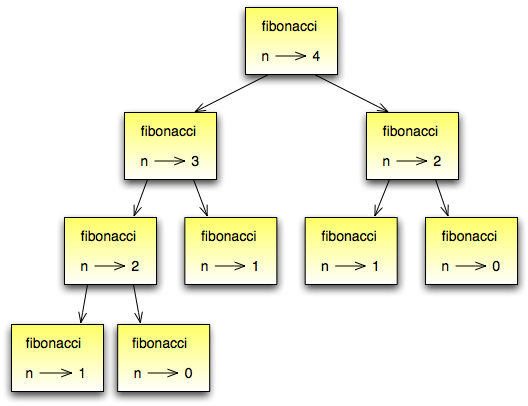

Tópicos
Os tipos compostos que voce aprendeu - strings, listas e tuplas - utilizam inteiros como indices. Se voce tentar utilizar qualquer outro tipo como indice, voce receberá um erro.
Dicionários sao similiares a outros tipos compostos exceto por eles poderem user qualquer tipo imutavel de dados como indice. Como exemplo, nos criaremos um dicionário para traduzir palavras em Inglês para Espanhol. Para esse dicionário, os indices serão strings.
Uma maneira de criar um dicionario é comecando com um dicionário vazio e depois adiconando elementos. Um dicionário vazio é denotado assim {}:
>>> ing2esp = {}
>>> ing2esp['one'] = 'uno'
>>> ing2esp['two'] = 'dos'
A primeira atribuição cria um dicionario chamado ing2esp; as outras atribuições adicionam novos elementos para o dicionário. Nos podemos imprimir o valor corrente de um dicionario da maneira usual:
>>> print ing2esp
{'one': 'uno', 'two': 'dos'}
Os elementos de um dicionário aparecem em uma lista separada por vírgulas. Cada entrada contêm um indice e um valor separado por dois-pontos. Em um dicionário, os índices sao chamados de chaves, entao os elementos são chamados de pares chave-valor.
Outra maneira de criar dicionários é fornecendo uma lista de pares chaves-valor utilizando a mesma sintaxe da última saída.
>>> ing2esp = {'one': 'uno', 'two': 'dos', 'three': 'tres'}
Se nos imprimirmos o valor de ing2esp novamente, nos teremos uma surpresa:
>>> print ing2esp
{'one': 'uno', 'three': 'tres', 'two': 'dos'}
Os pares chave-valor não estão em ordem! Felizmente, não a motivos para se preocupar com a ordem, desde que os elementos do dicionário nunca sejam indexados com indices inteiros. Podemos usar as chaves para buscar os valores correspondentes:
>>> print ing2esp['two']
'dos'
A chave ‘two’ retornou o valor ‘dos’ mesmo pensando que retornaria o terceiro par chave-valor.
O comando del remove um par chave-valor de um dicionário. Por exemplo, o dicionário abaixo contem os nomes de varias frutas e o numero de cada fruta em no estoque:
>>> inventario = {'abacaxis': 430, 'bananas': 312, 'laranjas': 525, 'peras': 217}
>>> print inventario
{'laranjas': 525, 'abacaxis': 430, 'peras': 217, 'bananas': 312}
Se alguem comprar todas as peras, podemos remover a entrada do dicionário:
>>> del inventario['peras']
>>> print inventario
{'laranjas': 525, 'abacaxis': 430, 'bananas': 312}
Ou se nós esperamos por mais peras em breve, nos podemos simplesmente trocar o valor associoado as peras:
>>> inventario['peras'] = 0
>>> print inventario
{'laranjas': 525, 'abacaxis': 430, 'peras': 0, 'bananas': 312}
A função len também funciona com dicionários; retornando o número de pares chave-valor:
>>> len(inventario)
4
Um método é parecido com uma função - possui parametros e retorna valores - mas a sintaxe é diferente. Por exemplo, o metodo keys recebe um dicionário e retorna uma lista com as chaves, mas em vez de usarmos a sintaxe de função keys(ing2esp), nos usamos a sintaxe de método ing2esp.keys():
>>> ing2esp.keys()
['one', 'three', 'two']
Dessa forma o ponto especifica o nome da função, keys, e o nome do objeto em que deve ser aplicada a função, ing2esp. Os parenteses indicam que esse método não possui parameteros.
Ao invés de chamarmos um método, dizemos que ele é invocado, nesse caso, nós podemos dizer que nós estamos invocando keys do objeto ing2esp.
O método values é parecido; retorna a lista de valores de um dicionário:
>>> ing2esp.values()
['uno', 'tres', 'dos']
O método items retorna os dois, na forma de uma lista de tuplas - cada tupla com um par chave-valor:
>>> ing2esp.items()
[('one','uno'), ('three','tres'), ('two','dos')]
A sintaxe fornece uma informação util. Os colchetes indicam que isso é uma lista. Os parentêses indicam que os elementos da lista são tuplas.
Se o método recebe de algum parâmetro, se utiliza a mesma sintaxe das funções. Por exemplo, o método has_key recebe uma chave e retorna verdadeiro (1) se a chave existe no dicionário:
>>> ing2esp.has_key('one')
True
>>> ing2esp.has_key('deux')
False
Se voce tentar chamar um método sem especificar em qual objeto, voce obterá um erro. Nesse caso, a mensagem de erro não é muito útil:
>>> has_key('one')
NameError: has_key
Uma vez que os dicionários são mutáveis, voce precisa saber sobre Aliasing. Sempre que duas variáveis referenciarem o mesmo objeto, quando uma é alterada, afeta a outra.
Se você quer modificar um dicionário e continuar com uma copia original, utilize o método copy. Por exemplo, opposites é um dicionário que contêm pares de antônimos:
>>> opposites = {'up': 'down', 'right': 'wrong', 'true': 'false'}
>>> alias = opposities
>>> copy = opposities.copy()
alias e opposites se referem ao mesmo objeto; copy se refere a um novo objeto igual ao dicionário opposites. Se você modificar o alias, opposites também será alterado.
>>> alias['right'] = 'left'
>>> opossites['right']
'left'
Se modificarmos copy, opposites não será modificado:
>>> copy['right'] = 'privilege'
>>> opposites['right']
'left'
Na seção 8.14, nós usamos uma lista de listas para representar uma matriz. Essa é uma boa escolha se a matriz for principalmente de valores diferentes de zero, mas considerando uma matriz esparsa como essa:
Uma representação usando uma lista contem muitos zeros:
>>> matriz = [ [0,0,0,1,0],
[0,0,0,0,0],
[0,2,0,0,0],
[0,0,0,0,0],
[0,0,0,3,0] ]
Uma alternativa é usarmos um dicionário. Para as chaves, nós podemos usar tuplas que contêm os números da linha e a coluna. Abaixo uma representação em um diciónario da mesma matriz:
>>> matriz = {(0,3): 1, (2, 1): 2, (4, 3): 3}
Nós precisamos apenas de três pares chave-valor, cada um sendo um elemento diferente de zero da matriz. Cada chave é uma tupla, e cada valor é um número inteiro.
Para acessarmos um elemento da matriz, nos utilizamos o operador []:
>>> matriz[0,3]
1
Note que a sintaxe da representação de um dicionário não é a mesma que a sintaxe usada pela representação pelas listas. Em vez de usarmos dois índices inteiros, nós usamos apenas um índice, que é uma tupla de inteiros.
Mas existe um problema. Se tentarmos buscar um elemento zero, obteremos um erro, pois não existe uma entrada no dicionário para a chave especificada:
>>> matriz[1,3]
KeyError: (1,3)
O método get resolve esse problema:
>>> matriz.get((0,3), 0)
1
O primeiro parâmetro é a chave; o segundo é o valor que get retornará caso não existe a chave no dicionário:
>>> matriz.get((1,3), 0)
0
get definitivamente melhora a semântica e a sintaxe do acesso a matrizes esparsas.
Se você brincou com a função fibonacci da seção 5.7, é provável que você notou que quanto maior o número passado para a função, mais tempo a função demora para executar. Além disso, o tempo da execução aumenta rapidamente. Em uma das nossas máquinas, fibonacci(20) executa instantaneamente, fibonacci(30) demora cerca de um segundo, e fibonacci(40) demora uma eternidade.
Para entender o porque, considere o gráfico de chamadas para fibonacci com n=4:
O gráfico mostra a estrutura da função, com linhas conectando cada execução com a execução que a chamou. No topo do gráfico, fibonacci tem n=4, que chama fibonacci com n=3 e n=2. Em seguida, fibonacci com n=3 chama fibonacci com n=2 e n=1. E assim por diante.
Conte quantas vezes fibonacci(0) e fibonacci(1) são chamadas. Essa é uma solução ineficiente para o problema, e torna-se pior quando o parâmetro recebido é um número maior.
Uma boa solução é guardar os valores que já foram calculados armazenando-os em um dicionário. Um valor previamente calculado que é guardado para ser utilizado mais tarde é chamado de hint. Abaixo uma implementação de fibonacci usando hints:
>>> previous = {0:1, 1:1}
>>> def fibonacci(n):
if previous.has_key(n):
return previous[n]
else:
newValue = fibonacci(n-1) + fibonacci(n-2)
previous[n] = newValue
return newValue
O dicionário chamado previous guarda os números de Fibonacci que nós ja conhecemos. Ele começa com apenas dois pares: 0 possui 1; e 1 possui 1.
Sempre que fibonacci é chamada, ela verifica o dicionário para determinar se ele já possui o resultado. Se o resultado estiver ali, a função pode retornar imediatamente sempre precisar fazer mais chamadas recursivas. Se o resultado não estiver ali, ele é calculado no newValue. O valor de newValue é adicionado no dicionário antes da função retornar.
Usando essa versão de fibonacci, nossa máquina consegue calcular fibonacci(40) em um piscar de olhos. Mas quando tentamos calcular fibonacci(50), nós veremos um problema diferente:
>>> fibonacci(50)
OverflowError: integer addition
A resposta, que você verá em um minuto, é 20.365.011.074. O problema é que esse número é muito grande para guardarmos como um inteiro do Python [1]. Isso é overflow. Felizmente, esse problema tem uma solução simples.
| [1] | N.T. A partir do Python 2. XXX este erro não ocorre mais, pois em caso de sobrecarga o valor inteiro é automaticamente promovido para o tipo long. |
Python possui um tipo chamado long int que permite trabalharmos com qualquer tamanho de inteiros. Existem duas maneiras de criarmos um valor long int. A primeira é escrever um inteiro seguido de um L no final:
>>> type(1L)
<type 'long int'>
A outra maneira é usarmos a função long que converte um valor para um long int. long pode receber qualquer valor númerico e até mesmo uma string de digitos:
>>> long(1)
1L
>>> long(3.9)
3L
>>> long('57')
57L
Todas as operações matemáticas funcionam com long int s, então não precisamos modificar muito para adaptar fibonacci:
>>> previous = {0: 1L, 1:1L}
>>> fibonacci(50)
20365011074L
Somente trocando os valores iniciais de previous, conseguimos mudar o comportamento da fibonacci. Os dois primeiros numeros da sequência são long ints, então todos os números subsequentes da sequência também serão.
Como exercício, converta fatorial para produzir um inteiro longo como resultado.
No capítulo 7, escrevemos uma função que contava o número de ocorrências de uma letra em uma string. A versão mais comum desse problema é fazer um histograma das letras da string, ou seja, quantas vezes cada letra aparece na string.
Um histograma pode ser util para comprimir um arquivo de texto. Pois diferentes letras aparecem com diferentes frequências, podemos comprimir um arquivo usando pequenos códigos para letras comuns e longos códigos para letras que aparecem em menor frequência.
Dicionários fornecem uma maneira elegante de gerar um histograma:
>>> letterCounts = {}
>>> for letter in "Mississippi":
... letterCounts[letter] = letterCounts.get(letter,0) + 1
...
>>> letterCounts
{'M': 1, 's': 4, 'p': 2, 'i': 4}
Começamos com um dicionário vazio. Para cada letra da string, achamos o contador (possivelmente zero) e o incrementamos. No final, o dicionário contem pares de letras e as suas frequências.
É mais atraente mostrarmos o histograma na ordem alfabética. Podemos fazer isso com os métodos items e sort:
>>> letterItems = letterCounts.items()
>>> letterItems.sort()
>>> print letterItems
[('M', 1), ('i', 4), ('p', 2), ('s', 4)]
Você ja tinha visto o método items antes, mas sort é o primeiro método que você se depara para aplicar em listas. Existem muitos outros métodos de listas, incluindo append, extend, e reverse. Consulte a documentação do Python para maiores detalhes.